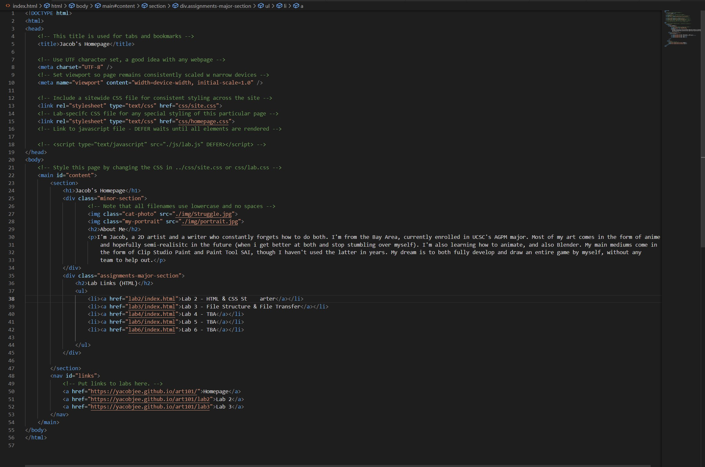

Lab 3 - File Structure & File Transfer
Challenge
Create a local, organized file structure, add index.html files, and upload it to the server
Problems
There weren't many problems, aside from self imposed ones in trying to go beyond and make the homepage more to my style. Eventually they were either resolved or the ideas were abandoned in favor of completeness. Additionally, the simpleness minimized partner work.
Reflection
This lab went incredibly smoothly, mostly because the lab was already completed in the template. There were some things added, but i personally didn't put a lot of effort into making astonishing changes or demonstrated exceptional work, but at least I now understand how iterating through files works. It'll come in handy when coding concepts like loops and recursion come into play.
Results
File structure, organized correctly
HTML of the homepage
How the homepage looks on local
HTML of Lab 3